発表会情報
●日時： 2013年1月30日（水） 13:00 to 16:30
●会場： 明治大学 生田校舎 A館417教室（神奈川県川崎市多摩区東三田1-1-1 ）
●主催： 明治大学 宮下研究室 http://miyashita.com
●概要： B4の卒業論文発表会と，B4＋M2によるデモ発表会を開催します！
B4は配属から1年半の集大成を口頭発表とデモで，M2は修士論文発表会に先立ち
デモでこれまで行ってきた研究について熱く発表します！
他研究室・外部からの参加も自由です！（当日現地にお越しください）
発表会後には懇親会もございます．参加は無料なので気軽にご参加ください！
●前回： homeiNTERACTION2012
プログラム
| B4卒論発表 （座長:M1嶋本諒太 twitter座長:M1松野祐典） | ||
| 13:00 | 井川 洋平 | アイズフリーで入力可能な「方向のみ」のフリック入力システム |
| 13:15 | 大島 裕樹 | Rewind-ow: 指定領域の過去を閲覧するツール |
| 13:30 | 大家 眸美 | 否定的感情伝染防止のための換言手法及びウェブコンテンツへの適用 |
| 13:45 | 加藤 邦拓 | 時間軸の概念を取り入れたプログラミング支援システム |
| 14:00 | 黒澤 祐也 | レーザプラズマ式 3 次元ディスプレイのためのモデリングツール |
| 14:15 | 高橋 治輝 | 楽譜断片から始めるドラム練習 |
| 14:30 | 貫 貴裕 | 輝度を用いて仮想回路と実在部品を繋ぐ電子工作環境 |
| 14:45 | 吉田 有花 | 身体動作の重畳表示による動画上での疑似ライブ感共有システム |
| 15:00 | B4＋M2 デモ発表Madness （座長:M1前田晴己 twitter座長:M1山本涼太） | |
| 15:20 | デモセッション | |
|
井川 洋平 大島 裕樹 大家 眸美 加藤 邦拓 黒澤 祐也 高橋 治輝 貫 貴裕 吉田 有花 太田 佳敬 中橋 雅弘 馬場 さおり 松岡 拓人 山中 祥太 |
B4 卒業研究 アイズフリーで入力可能な「方向のみ」のフリック入力システム Rewind-ow: 指定領域の時間を巻き戻して閲覧するツール 否定的感情伝染防止のための換言手法及びウェブコンテンツへの適用 時間軸の概念を取り入れたプログラミング支援システム レーザプラズマ式 3 次元ディスプレイのためのモデリングツール 楽譜断片から始めるドラム練習 輝度を用いて仮想回路と実在部品を繋ぐ電子工作環境 身体動作の重畳表示による動画上での疑似ライブ感共有システム M2 修士研究 他人の操作を再利用する汎用システムの提案 許容度合いからみたプログラミング言語デザイン 路面上への二点投影による定刻到着支援 そろそろ時間じゃない？なんか焦げ臭くない？ 輻輳したウィンドウ間を移動可能なマウスカーソル操作手法とその評価 |
|
| 16:30 | クロージング | |
| 17:00 | 懇親会（参加自由） |
発表内容
| 井川 洋平 | アイズフリーで入力可能な |
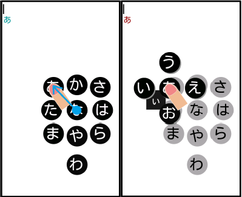 |
| 大島 裕樹 | Rewind-ow: |
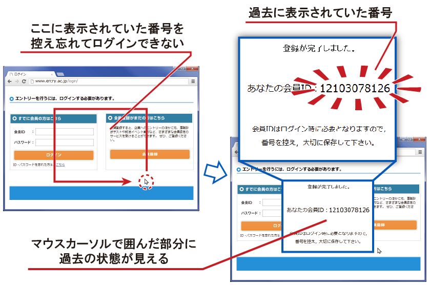 |
| 大家 眸美 | 否定的感情伝染防止のための換言手法 |
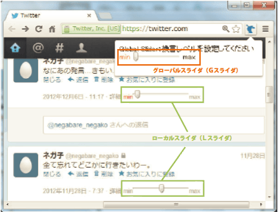 |
| 加藤 邦拓 | 時間軸の概念を取り入れたプログラミング支援システム プログラミングはソースコードの入力とコンパイル，実行を繰り返しながら行われる．試行錯誤の繰り返し作 業において利用される機能として Undo 機能がある．Undo 機能は行われた操作の履歴を線形に保持しているため，一 度過去の状態へ戻り，そこから修正を行うと修正前の内容が消えてしまい Redo ができなくなってしまう問題点があ った．このような問題は，プログラミングにおける試行錯誤において障害になる場面が多々あった．そこで，時間軸 の概念を取り入れたプログラミング支援システムを実装した．これにより過去のソースコードをいつでも復元可能と なり，より柔軟なプログラミングが可能となった． |
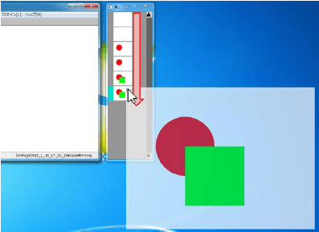 |
| 黒澤 祐也 | レーザプラズマ式 3 次元ディスプレイのための |
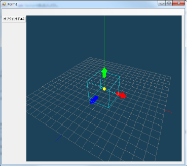 |
| 高橋 治輝 | 楽譜断片から始めるドラム練習 ドラム初心者は，ひとつの譜面を打楽器ごとに複数の譜面として解釈し，それらのタイミングを合わせながら演奏し ようとしがちである．この練習法では，どのタイミングでどのように身体を使うかが分かりにくく，そもそも正しく 演奏することができない．そこで，譜面を縦に裁断することで，拍ごとの身体の動かし方を理解させるシ ステムを提案する．裁断された譜面からは練習に不要な情報を取り除き，さらに繰り返しや同じパターンを発見しや すいように色分けする．これで練習できるようになった後は，譜面を段階的に統合していくことによってフレーズご とのまとまりや横のつながりを理解していく． |
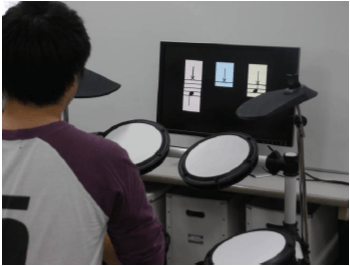 |
| 貫 貴裕 | 輝度を用いて仮想回路と実在部品を繋ぐ電子工作環境 ディスプレイの輝度値をセンサで読みとり，電位として扱うことで，仮想的な回路に実世界の電 子部品を繋ぐシステムを提案する．これにより，仮想世界の回路で実世界の回路を補うことができ，最低限の実在部 品で回路制作が可能になる．さらに，仮想回路側ではアンドゥや断線補完といった実世界では困難な支援が行える． |
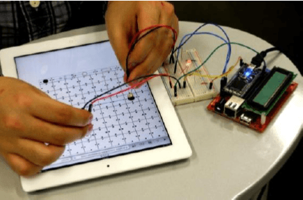 |
| 吉田 有花 | 身体動作の重畳表示による |
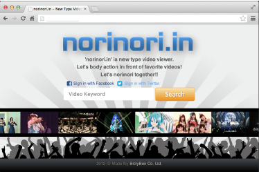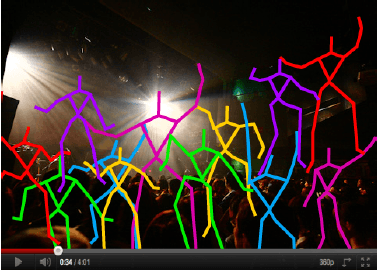 |
太田 佳敬 |
他人の操作を再利用する汎用システムの提案 あらゆるソフトウェアで他人が保存した操作を再利用することのできるシステムを提案する． このシステムは，個々の操作をテキスト表現でマクロに保存する従来のシステムのように，自分の状況に 適応する際にマクロの書き方を学習する必要がなく，いくつかの基本的な操作と，操作を再利用したい対象 の使用方法のみを知ることで操作を再利用できるようにする．さらに，OS に入力される操作を利用するため， OS 上で動くあらゆるシステムで操作の再利用を行うことができる．また，プログラミング初心者と熟達者に 使用する評価実験を行ったところ，共に従来の操作をテキスト表現で保存するシステムでは時間内に指示を達 成できず，本システムではどちらの被験者も達成することができた．特にプログラミング初心者は従来のシス テムでは操作の再利用を諦めたが，提案システムでは短時間の内に操作の再利用方法を学習し，より高度な 方法を発見することが確認できた． |
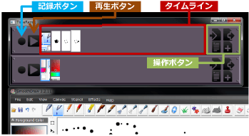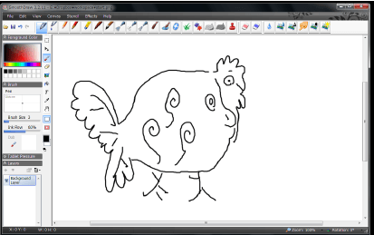 |
| 中橋 雅弘 | 許容度合いからみたプログラミング言語デザイン プログラミング言語研究において，許内度合いの観点からみて十分に考慮されてこな かった部分を補う２つの言語を提案する．１つは，ユーザの曖昧な記述をコンパイラが極限まで許容するこ とで，ユーザと対話しながらプログラミングを行う新たなスタイルを提案する「108107」である．従来の プログラミングでは厳密で正確な記述により，1 つの実行結果を確認しながら開発を行うものだった．本論 文で提案する「108107」では，ユーザの曖昧な記述から複数の解釈が考えられる場合，その全ての実行結果 の可能性を確認しながら開発を行うことができる．もう１つは，プログラミングに関心がないユーザでも， いつのまにかプログラミングをしてしまっているようなデザインを目指した「File Based Programming」 である．File Based Programming は，既存の Windows Explorer に “実行ボタン” を追加し，ファイルの 移動や，追加といったユーザの見知った操作でプログラミングすることを可能としたものである． |
 |
| 馬場 さおり | 路面上への二点投影による定刻到着支援 私たちは普段から使いなれた道であっても，自身の歩行ペースが適切であるか, 曖昧で不安な状態の まま目的の場所へ移動している時間的な迷子である．これまでの解決策として，カウントダウンや理想速 度を示すシステムが提案されてきた．しかし，数値情報やメータ表示等では情報量が多く直感性に欠けて いたり，歩行しながら使用することの安全面についての考慮がされていなかった．本論文では，現在の歩 行速度が理想速度からどの程度ずれているか，数値情報を可視化させ，路面上に直接投影される三人称視 点を用いた手法を提案する．予備実験として，実際に到着予定時間に到着するかを目的とした，システム の精度の評価実験を行った．次に，デバイス使用時と使用なしの比較実験を行い，路面上に二点投影する 提示方法が，ユーザにとってどのように受け入れられるかを評価した．三人称視点を使った二点の投影方 法は，歩行ペースが理解しやすく有効であり被験者からの好感度も高かった．展望として，デバイス使用 を介してのコミュニケーション等も考えられる． |
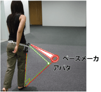 |
| 松岡 拓人 | そろそろ時間じゃない？なんか焦げ臭くない？ プレゼンテーションにおいては，終了予定の数分前に予鈴が鳴らされることが多い．しかしこの予鈴は発表を妨げ， その後も発表者が流れを取り戻しにくい． 「そろそろ時間だ」という知らせは定刻の何分前にするとかではなく，迫 り来る時間はもっと連続的なものとして存在する．時間伝達も連続性を直感的に感じられるようデザインされるべき ではないか．私達が提案する焦げ臭を用いた時間伝達の場合は，焦げ臭の濃度が次第に高くなることによって時間が 迫っているという感覚を表現する事ができる． |
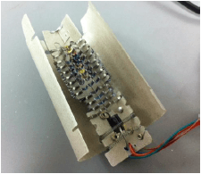 |
| 山中 祥太 | 輻輳したウィンドウ間を移動可能な |
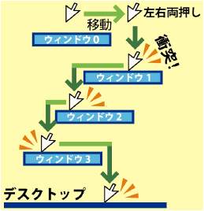 |
●Let's tweet!: Tweet 公式ハッシュタグ：#homeiNTERACTION